File: 000407.gt.txt (if the image is defective, simply delete all Arabic text and the line will be excluded)

وقالوا : جميل وسمج وسميج .
File: 000408.gt.txt (if the image is defective, simply delete all Arabic text and the line will be excluded)

وقالوا : عظيم ، ولم يأت له ضد ؛ استغنوا(3) بضد مثله عن ضده ،
File: 000409.gt.txt (if the image is defective, simply delete all Arabic text and the line will be excluded)

وهو كبير وضده صغير .
File: 000410.gt.txt (if the image is defective, simply delete all Arabic text and the line will be excluded)

وقالوا : سمين ، ولم يأت له ضد على بنائه ، فأما قولهم « هزيل »
File: 000411.gt.txt (if the image is defective, simply delete all Arabic text and the line will be excluded)

فعلة وفعلة(1)
File: 000412.gt.txt (if the image is defective, simply delete all Arabic text and the line will be excluded)

« كسوة وكسوة » و « رشوة ورشوة » و « قدوة وقدوة » ، و « إسوة
File: 000413.gt.txt (if the image is defective, simply delete all Arabic text and the line will be excluded)
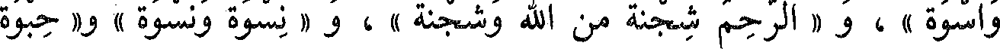
واسوة » ، و « الرحم شجنة من الله وشجنة » ، و « نسوة ونسوة » و« حبوة
File: 000414.gt.txt (if the image is defective, simply delete all Arabic text and the line will be excluded)

وحبوة » ، و «حظي فلان حظوة وحظوة » ، و « خصية وخصية » و « خفية
File: 000415.gt.txt (if the image is defective, simply delete all Arabic text and the line will be excluded)

وخفية » ، و « نسبة ونسبة » و « مرية ومرية » من الشك ، و « حاف بين
File: 000416.gt.txt (if the image is defective, simply delete all Arabic text and the line will be excluded)

الحفوة والحفوة » و « الشقة والشقة » للسفر البعيد(2) ، و « العدوة والعدوة »
File: 000417.gt.txt (if the image is defective, simply delete all Arabic text and the line will be excluded)

للمكان(3) المرتفع ، و « عدوة الوادي وعدوته » ، وفيه(4) « غلظة وغلظة »
File: 000418.gt.txt (if the image is defective, simply delete all Arabic text and the line will be excluded)

و« رفقة ورفقة » ، و « كنية وكنية » و « امرأة ذات كدنة وكدنة » إذا كانت ذات
File: 000419.gt.txt (if the image is defective, simply delete all Arabic text and the line will be excluded)
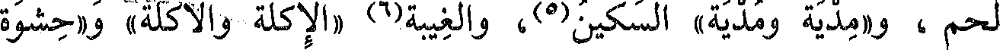
لحم ، و«مدية ومدية» السكين(5)، والغيبة(6) «الإكلة والأكلة» و «حشوة
File: 000420.gt.txt (if the image is defective, simply delete all Arabic text and the line will be excluded)
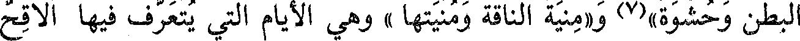
البطن وحشوة»(7) و«منية الناقة ومنيتها » وهي الأيام التي يتعرف فيها ألاقح
File: 000421.gt.txt (if the image is defective, simply delete all Arabic text and the line will be excluded)
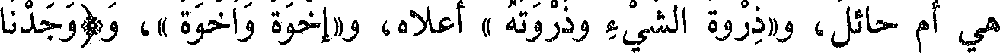
هي أم حائل، و«ذروة الشيء وذروته » أعلاه، و«إخوة وأخوة »، و(وجدنا
File: 000422.gt.txt (if the image is defective, simply delete all Arabic text and the line will be excluded)
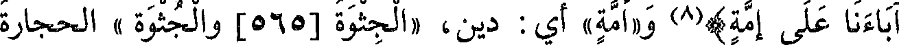
آباءنا على إمة)(8) و«أمة» أي : دين، «الجثوة [565] والجثوة » الحجارة
File: 000423.gt.txt (if the image is defective, simply delete all Arabic text and the line will be excluded)

المجتمعة، و«جذوة من النار وجذوة »، و«قنوة المال وقنوة»، و «قنية وقنية»
File: 000424.gt.txt (if the image is defective, simply delete all Arabic text and the line will be excluded)

ويقال : «سروة وسروة» للنصال القصار .
File: 000425.gt.txt (if the image is defective, simply delete all Arabic text and the line will be excluded)

قال الفراء : وقولهم « العصي » و « الحقي » بالياء(1) ؛ لأنهم
File: 000426.gt.txt (if the image is defective, simply delete all Arabic text and the line will be excluded)

يجتمعون ما بين الثلاثة منه إلى العشرة بالياء ، فيقال « ثلاث أدل » و « عشرة
File: 000427.gt.txt (if the image is defective, simply delete all Arabic text and the line will be excluded)
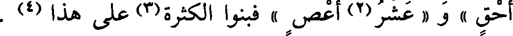
أحق » و « عشر(2) أعص » فبنوا الكثيرة(3) على هذا (4) .
File: 000428.gt.txt (if the image is defective, simply delete all Arabic text and the line will be excluded)

قال (5) : وقولهم « الفتوة » بالواو وأصلها الياء ، وهي مصدر من
File: 000429.gt.txt (if the image is defective, simply delete all Arabic text and the line will be excluded)
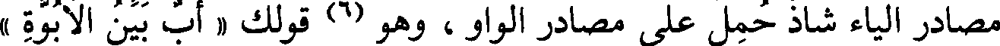
مصادر الياء شاذ حمل على مصادر الواو ، وهو (6) قولك « أب بين الأبوة »
File: 000430.gt.txt (if the image is defective, simply delete all Arabic text and the line will be excluded)

و « أخ بين الأخوة » و « ابن بين البن،ة » (7) ، فلما حملت افتوة على مصادر
File: 000431.gt.txt (if the image is defective, simply delete all Arabic text and the line will be excluded)
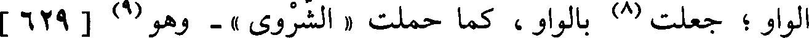
الواو ؛ جعلت (8) بالواو ، كما حملت « الشروى » - وهو(9) [ 629 ]
File: 000432.gt.txt (if the image is defective, simply delete all Arabic text and the line will be excluded)

المثل - على الواو ؛إذ أشبهت(10) مصادر الواو مثل دعوى ونجوى ، قال :
File: 000433.gt.txt (if the image is defective, simply delete all Arabic text and the line will be excluded)
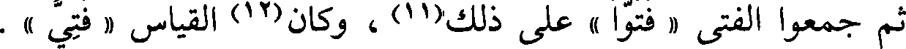
ثم جمعوا الفتى « فتوا » على ذلك(11) ، وكان(12) القياس « فتى ».
File: 000434.gt.txt (if the image is defective, simply delete all Arabic text and the line will be excluded)

قال(13) : ولم نجد ياء بعدها واو غير مهموزة في الأسماء إلا في
File: 000435.gt.txt (if the image is defective, simply delete all Arabic text and the line will be excluded)

« يوم » ، قال(14) : ولا يقال من يوم فعلت ولا يفعل .
File: 000436.gt.txt (if the image is defective, simply delete all Arabic text and the line will be excluded)

باب ما جاء على فعلل وفيه لغتان
File: 000437.gt.txt (if the image is defective, simply delete all Arabic text and the line will be excluded)

فعلل وفعلل
File: 000438.gt.txt (if the image is defective, simply delete all Arabic text and the line will be excluded)

« دخلل فلان ودخلله » أي : خاصته ، و « رجل قعدد وقعدد(1)» إذا كان قريب
File: 000439.gt.txt (if the image is defective, simply delete all Arabic text and the line will be excluded)

الآباء إلى الجد الأكبر ، و « جؤذر وجؤذر » ، و « قنفذ وقنفذ » و « عنصل
File: 000440.gt.txt (if the image is defective, simply delete all Arabic text and the line will be excluded)
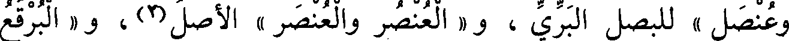
وعنصل » للبصل البري ، و « العنصر والعنصر » الأصل(2) ، و « البرقع
File: 000441.gt.txt (if the image is defective, simply delete all Arabic text and the line will be excluded)

والبرقع » ، و«طحلب وطحلب » .
File: 000442.gt.txt (if the image is defective, simply delete all Arabic text and the line will be excluded)
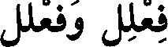
فعلل وفعلل
File: 000443.gt.txt (if the image is defective, simply delete all Arabic text and the line will be excluded)

« جنجن وجنجن » لواحد الجناجن ،وهي عظام الصدر ، و«بفيه الإثلب
File: 000444.gt.txt (if the image is defective, simply delete all Arabic text and the line will be excluded)

والأثلب » و « الكثكث والكثكث » أي : التراب .
File: 000445.gt.txt (if the image is defective, simply delete all Arabic text and the line will be excluded)
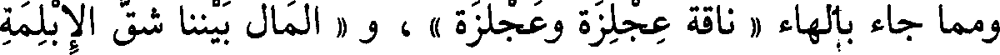
ومما جاء بالهاء « ناقة عجلزة وعجلزة » ، و « المال بيننا شق الإبلمة
File: 000446.gt.txt (if the image is defective, simply delete all Arabic text and the line will be excluded)
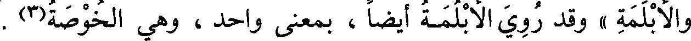
والأبلمة » وقد روي الأبلمة أيضا ، بمعنى واحد ، وهي الخوصة(3) .
File: 000447.gt.txt (if the image is defective, simply delete all Arabic text and the line will be excluded)
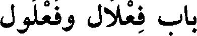
باب فعلال وفعلول
File: 000448.gt.txt (if the image is defective, simply delete all Arabic text and the line will be excluded)

« شمراخ وشمروخ » ، و « عثكال وعثكول » ، و « إثكال
File: 000449.gt.txt (if the image is defective, simply delete all Arabic text and the line will be excluded)
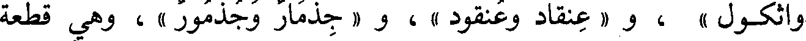
وأثكول » ، و « عنقاد وعنقود » ، و « جذمار وجذمور » ، وهي قطعة
File: 000451.gt.txt (if the image is defective, simply delete all Arabic text and the line will be excluded)

باب أفعل وفعل
File: 000452.gt.txt (if the image is defective, simply delete all Arabic text and the line will be excluded)
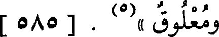
ومعلوق »(5) . [ 585 ]
File: 000453.gt.txt (if the image is defective, simply delete all Arabic text and the line will be excluded)

« أشعث وشعث » ، و « أجرب وجرب » ، و « أخشن وخشن » ،
File: 000454.gt.txt (if the image is defective, simply delete all Arabic text and the line will be excluded)

باب معاني أبنية الأسماء
File: 000455.gt.txt (if the image is defective, simply delete all Arabic text and the line will be excluded)
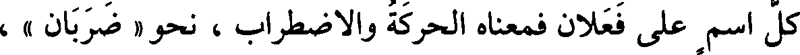
كل اسم على فعلان فمعناه الحركة والاضطراب ، نحو « ضربان » ،
File: 000456.gt.txt (if the image is defective, simply delete all Arabic text and the line will be excluded)

و« نزوان » و« غليان » و« جولان » و« طيران » و« لهبان (1 النار» ،
File: 000457.gt.txt (if the image is defective, simply delete all Arabic text and the line will be excluded)
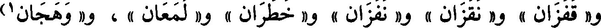
و« قفزان » و« نقزان » و« نفزان » و« خطران » و« لمعان » ، و« وهجان1)